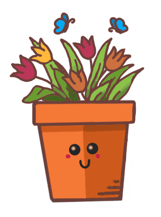

Cada casa tiene su
Planta ideal
.
¿Cuál será la tuya?
El lugar deseado para colocar la planta recibe cuantas horas de luz del sol directa?
8 horas o más
Al menos 4 horas
No recibe luz solar
Qué tamaño de planta prefieres?
Pequena
Grande
Te gustaría tener una planta que produzca flores?
Con flores 
Sin florers
Tienes una mascota que tenga acceso a la planta?
No
Si
Ver planta ideal